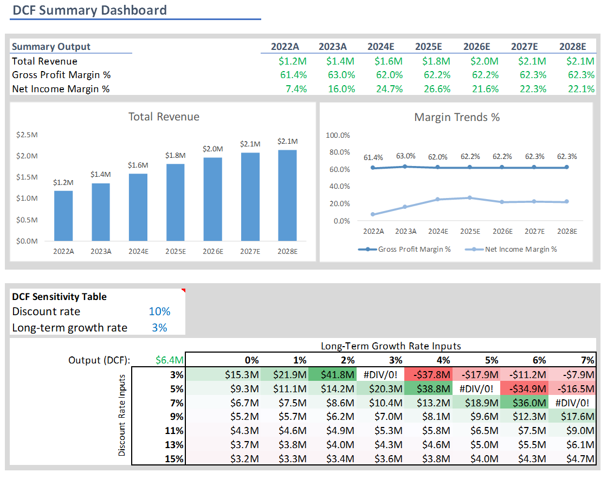

Overview
The project aims to develop a Comprehensive Financial Model that integrates the three core financial statements—Income Statement, Balance Sheet, and Cash Flow Statement—to analyze company performance and valuation. This addresses the need for dynamic tools in financial analysis.
This Excel-based model features:
- Interlinked Financial Statements: Providing a holistic view of the company's financial health.
- Discounted Cash Flow (DCF) Analysis: Estimating intrinsic value through future cash flow projections and terminal value.
- Dynamic Dashboard: Visualizing key findings and enabling scenario analysis.
View the full project on Github.
Approach and Methodology
- Dynamic Three-Statement Model: Forecasts one year for each of the three main financial statements: Income Statement, Cash Flow Statement, and Balance Sheet.
- Scenario Analysis: Utilizes an assumptions column on each sheet for adjusting the model to different scenarios.
- DCF Valuation:
- Provides five-year cash flow projections.
- Includes terminal value calculation.
- Applies Weighted Average Cost of Capital (WACC) to obtain the total present value of the business.
- Summary Dashboard:
- Displays key forecasted values, including Total Revenue, Gross Profit Margin %, and Net Income Margin % for the years 2022 to 2028.
- Features dynamic charts to visualize data.
- Contains WACC calculation and DCF sensitivity analysis data table showing changes in Total Present Value with different WACC and Long-Term Growth Rate combinations.
Visuals
Dashboard:
